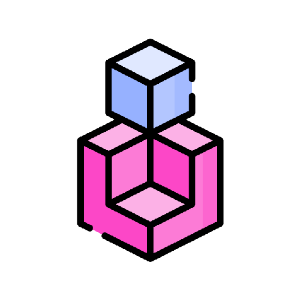

Game developer with a passion for crafting code and enthusiast for game design.
Full time developer in my studio Fragile Softworks.
I have worked with known game engines and participated in multiple game jams. Plus i love teamwork, so let's collaborate.
What i do

Game Mechanics
|
AI Solutions
|
Game Dynamics
|
|
Design of gameplay loops and game mechanics from prototyping to execution.
|
Development of AI behaviours for characters and systems using FSM's.
|
Design of patterns for multiple game systems oriented to player motivations.
|

First person adventure game. Worked with Finite State Machines for the White Warrior's AI and a hint system for finding objects, also the overall lighting, UI and postprocessing were set by me. Can be completed with two different endings.

First person walking simulator where you control a rescue diver that searches for his lost crewmate. Worked in the gameplay sequences using
Sequencer and also designed the monster boss persecution and level streaming.

Pen pal puzzle game. Worked in a translation system and a drag-and-drop interface that imitates a desktop application. There is a timer for solving puzzles and each letter is changed day by day.

Endless flying game with a gas meter that depleates each time player propulses. It has a system to generate new lanes of coins and enemies and also basic patrols for enemies.